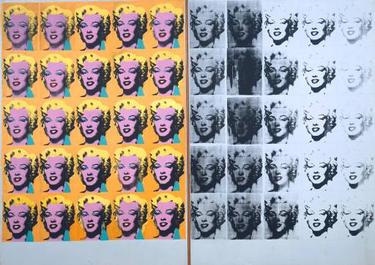

AI will be to the music industry what the camera was to the painting industry.
With the rapid advancement of AI, we are seeing new uses for it almost daily. One of the most popular of these new uses is music generation. One relevant example is the Bad Bunny feat Bad Gyal song, which was released on many platforms such as TikTok, where it went viral, which caused great controversy and received criticism from Bad Bunny himself for the plagiarism of his voice. This leaves us (or at least me) with a lot of doubts and curiosity about where this is going.
In the near future, anyone might be able to make their own songs using an AI to write, compose, and perform their own personalized song. This gives you the chance to have your own song about any topic you want, you can make a sad song by Ed Sheeran about how [insert which ever name] rejected you, or you can make a hype song about how bad [insert which ever name] fumbled the bag by rejecting you by Drake and 21 Savage. The door for hyper personalized music is open and you will never have to scroll through Spotify searching for the perfect song that you can relate to ever again. How will this affect the music industry? This is probably impossible to answer with any degree of certainty, but we can at least try to draw some comparisons.
Imagine you could have a personalized, extremely well made painting of anything you see at any time just by clicking a button on a device small enough to fit in your pocket. Well, as you probably already know, you can do this with your phone camera. So maybe it is a bit of a stretch, but allow me for the sake of this story to compare cameras with generative AI. Taking a look at how cameras change the painting industry and artistic scene, maybe we can better understand what to expect from the music industry in these next few years.
In some ways, photography minimized the need for paintings as a method to immortalize a moment. Why would I hire a painter to graphically record an event forever, when I could take a picture of it, which is easier to do, more accurate, and more easily reproduced. Obviously, cameras took a long time to fully develop, and this change was gradually made, so it wasn’t as black and white as I am making it seem. The art of painting had to evolve and change, transforming into a different thing as it lost its relevance as a recording tool. It leaned more to its artistic side, overall parting ways from realistic depictions of scenes. Now painters can focus on the sentiment of it, on what feeling they wanted to show instead of what object or person they need to portray.
Below you can see a timeline with the biggest art trends and their most famous representation. Do you think you could pinpoint the time when cameras were popularized?

'The Last Supper' by Leonardo da Vinci (High Renaissance)
'The Madonna with the Long Neck' by Parmigianino (Mannerism)

'The Night Watch' by Rembrandt (Baroque)
'The Swing' by Jean-Honoré Fragonard (Rococo)

“Liberty Leading the People' by Eugène Delacroix (Romanticism)

'A Burial at Ornans' by Gustave Courbet (Realism)

'Water Lilies' by Claude Monet (Impressionism)

'Les Demoiselles d'Avignon' by Pablo Picasso (Cubism)

'The Persistence of Memory' by Salvador Dalí (Surrealism)
'No. 5, 1948' by Jackson Pollock (Abstract Expressionism)

'Marilyn Diptych' by Andy Warhol (Pop Art)
Obviously something happened between Realism and Impressionism and although cameras were officially invented some years between this change in trends (it is hard to pinpoint these dates exactly, but it's about a 40-50 year difference), you can clearly see the effect that cameras had on paintings. Finally, as the cherry on the top, the last painting included ('Marilyn Diptyc') actually incorporates photography techniques into the art.
So now the questions we are left with are, will something similar happen to music? And what would that look like? Although we can't possibly know for sure, speculating is harmless. I think there is a very high chance something similar will happen to music, in the way of a radical artistic trends transition. Maybe Hip-hop is the last ‘realistic’ genre we got, as happened to Realism in paintings.
So what does the future of music sound like? Maybe we move away from lyrics all together, leaving that to the AIs, and we go into purely instrumental (of course instruments played/created/assisted by AI) tracks. Music where all that matters is what it makes you feel, maybe we will start to see museums of music, where artists can design a whole ambient for their songs. Of course, I don't think music as we know it today will disappear, but I do think there is a chance that in a few years the music we consume as entertainment rather than art will be produced by an AI following our directions.
Another thing I haven't taken into account yet are the voices. The current AIs borrow (or steal) their voices from already established artists. I see this going two ways. Either the AIs evolve to also allow you to create the voice you want with high tuning and precision. Or, on a more dystopian note, artists will "sell" their voices. To stick to the camera analogy, we can think of buying a better camera to get better pictures the same as buying better voices to get better songs. Maybe in the same way we can apply filters to our pictures to get different artistic styles, maybe the AI music comes with a 'default' voice and you can apply some filters to it to make however you want.
Is evident that music and paint are two drastically different art forms, but this doesn’t take away from the fact that they are related in some ways. Given the nature of technological advancement, it is impossible to predict many things about it. But one thing is certain; we are living through a shift in human culture throughout the implementation of AI in our day to day lives.